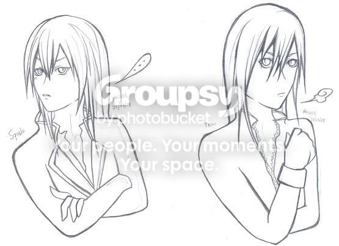

แอบมาแปะ...

พอดีคิดเอาไว้นานแล้วอ่ะนะ ว่าหลามช่างเหมือนยาซูอะไรอย่างนี้(ต่างจุดเดียวคือนิสัย?)
ก็เลยวาดสองคนนี้ให้อยู่หน้าเดียวกัน
แต่เหมือนsheทั้งสองจะเขม่นกันเองชอบกล..

บาลลาแร็ง ณ ฟิค E.I.N
สีไม้ คอลลีน กับอะไรก็ไม่รู้ปนๆยำๆกัน
ทั้งอัลลิเกเตอร์ สเต๊ดเลอร์ เฟเบอร์ ฮู้ย... เยอะ
(พอดีผมใช้สองกล่อง กล่องนึงคอลลีนของผม กล่องนึงเป็นสียำทุกยี่ห้อของพี่สาว)

พารอล ณ ฟิค E.I.N
สีไม้เหมือนเดิม
มิมิจงเจริญ

ลิเกอเรอ ณ ฟิค Moe High School ที่บอร์ดECO
สีไม้อีกแหละ.. เอาเป็นว่าช่วงนี้สีไม้ฟีเวอร์
แต่ข้อเสียก็คือ ผมใช้ไส้ดินสอ4B ดังกะนั้น..
จึงลบเส้นยากโคตรๆ
และจะมีผงคาร์บอนติดออกมาเป็นปื้นเวลาที่เผลอระบายสีทับเข้า
...เจริญลงเถอะพ่อคุณ

ซูแซ็ตเตอ ณ สมาคมออริของผมเอง
สีไม้!!
เวลาลงสีเงินแล้วชอบเอาสีฟ้ากับสีน้ำเงินมาแจม รู้สึกตัวอีกทีหัวก็กลายเป็นสีฟ้าไปแล้ว.. =w=
http://i133.photobucket.com/albums/q74/ ... -Beach.jpg
(ภาพใหญ่เวอร์ เป็นลิ้งค์นะฮะ)
ซูแซ็ตเตอ-ชินริ ณ สมาคมออริของผมเอง
เวอร์ชั่น นุ่งน้อยห่มน้อย♥
พี่สาวเดินมา ทักว่า 'นั่นทาน้ำมันมวยมาหรอน่ะ'
... แสกนเข้ามานี่น้ำมันมวยจางไปเยอะแล้วนะ เอิ๊กกก
http://i133.photobucket.com/albums/q74/ ... -Beach.jpg
(ภาพใหญ่เวอร์ เป็นลิ้งค์นะฮะ)
เลวิน-เดโม ณ สมาคมออริของผมเอง
เวอร์ชั่น นุ่งน้อยห่มน้อย แผ่นหลังของลูกผู้ชาย และ คะยั้นคะยอ!!
http://i133.photobucket.com/albums/q74/ ... uEnfer.jpg
(ภาพใหญ่เวอร์ เป็นลิ้งค์นะฮะ)
วาดเมื่อวาน เสร็จวันนี้
ยังไม่ได้คิดชื่อ
แต่คำทางขวาอ่านว่า 'กราซ โอ อองแฟรฺ' แปลว่า 'ขอบคุณนรก' ฮะ ฮี่ฮี่ฮี่~
คำทางซ้าย อ่านว่า 'โอล่า' แปลว่า 'เฮ้ย!'
.. จริงๆนะเอ้อ
(ถึงผมจะโง่ฝรั่งเศสแบบดักดานหาที่เปรียบ แต่อันนี้ไม่มั่วนะเอ้อ!!)
กำลังจะจับลงสีในคอม
เพราะไม่ไว้ใจฝีมือลงสีของตัวเองนอกคอม
๕๕๕...
... ...๕๕.. ..๕
เศร้าในฝีมือของตัวเองยามไร้CGเหลือเกิน T_T"